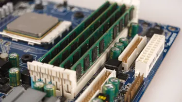

Una computadora está formada fundamentalmente por dos aspectos básicos: Hardware y software.
Tarjeta Madre.
(MotherBoard)
La tarjeta madre (MB) , también llamada “placa base” es de los componentes esenciales de las computadoras.
En ella se conectan los diferentes componentes internos, incluyendo el procesador CPU, la memoria RAM, la tarjeta gráfica, los discos duros, es decir todos los elementos internos.
En su forma, la tarjeta madre están construidas en una placa en la que se encuentra un circuito integrado que interconecta un conjunto de chips, y componentes electrónicos, conectores etc.
Además, dentro de una tarjeta madre pueden estar incorporados de fábrica los siguientes componentes:
- Tarjeta de sonido.
- Tarjeta de red.
- Ranuras de expansión.
- Tarjeta gráfica.
- Puertos.
No todas las placas base son iguales. Por lo que se tiene que saber los componetes y especificaciones que soporte la misma y sean compatibles, el procesador y los componentes.
La tarjeta madre es la que va a determinar el tipo de procesador y cantidad de módulos de memoria RAM que pueden instalarse, la cantidad y los tipos de discos duros que se conecten y la tarjeta de video que podrás instalar en ella, entre otras cosas.
El procesador
Unidad Central de Procesamiento CPU.

El CPU es algo así como el cerebro de tu computadora. En realidad es el elemento encargado de analizar y procesar toda la información que ingresa y sale de la computadora.
El procesador decodifica y ejecuta las instrucciones de los programas que se encuentran cargados en la memoria principal de la computadora.
Además funciona como coordinador y controlador de casi todos los otros componentes, tanto de los internos como de los externos.
Debido a su misión dentro de la computadora, el procesador es el que define la velocidad de proceso que logre obtener la computadora. A mayor cantidad de GHz, mayor será la velocidad alcanzada.
En cuanto a marcas, las más conocidas en el mercado actual son Intel y AMD.Pero además, los procesadores pueden ser seleccionados por cantidad de los bits a procesar por ciclo: 32 bits o 64 bits.
La mayoría de los procesadores suelen incorporar de fábrica un ventilador para mantenerlo en condiciones óptimas de temperatura el componente.
Memoria RAM.
La Random Access Memory o más conocida como memoria RAM se conecta a la tarjeta madre y en ella se guardan y se cargan las instrucciones que se ejecutan en el procesador.
Esas instruccionesson enviadas desde los componentes y dispositivos conectados a la tarjeta madre y a los puertos de la computadora.
Las características principales que definen el funcionamiento de la memoria RAM son (soportadas por la tarjeta madre):
- Cantidad de memoria en GB.
- Tipo de memoria RAM.
- Velocidad de la memoria.
- Tipo de ranura.
Es importante que tengas claro estos datos para elegirel tipo de memoria RAM correcta para tu equipo. En definitiva la tarjeta madre será el elemento que defina el tipo y la cantidad de RAM que puedes instalar.
Disco duro.
El disco duro de tu computadora es el componente encargado de almacenar de forma permanente sistemas operativos así como los datos que ingresan en la computadora.
Todo la información que contiene la computadora, incluyendo documentos (archivos, aplicaciones, fotografías música, descargas de internet, etc.) Pero además en él también se almacena el sistema operativo y todos los programas instalados en la computadora.
Para poder ser el soporte de almacenamiento principal de la computadora, el disco duro pueden contener grandes cantidades de información.
Todos los datos de la computadora se almacenan en el disco duro, de ahí su importancia.
Por esto, un disco duro debes tener presente los siguientes datos:
- Capacidad.
- Velocidad de conexión.
- Velocidad de RPM
Además, hoy existen distintos tipos de discos duros, que se diferencias dependiendo de la tecnología utilizada para su construcción. Hoy puedes encontrar los siguientes tipos de discos duros:
HD (disco mecánico tradicional). SD (disco de estado sólido).Es importante también destacar que en los últimos tiempos los discos duros tradicionales están siendo reemplazados por modernasunidades de almacenamiento de tipo memoria Flash.
Estas memorias flash no emiten calor ni ruido, tampoco se desgastan con el paso del tiempo y son realmente rápidas.
Fuente de alimentación.

La fuente de alimentación es el componente queproporciona corriente eléctrica a todos los elementos de la computadora. Esta se encuentra dentro del gabinete.
Para ello, la fuente de alimentación transforma la corriente alterna de la red de tu casa en corriente continua. Luego de ello la distribuye a todos los componentes que estén conectados a la computadora.
Es importante tener en cuenta que las fuentes de alimentación suelen manejar diferentes voltajes 12 Volts, 5 Volts y 3.3 Volts. Un dato importante en una fuente de alimentación es la potencia que entrega. En este caso a más potencia, mayor capacidad para conectar componentes.
En general una fuente de alimentación puede tener una potencia de 400W a 500W, aunque para computadoras que poseen hardware adicional, como tarjeta gráfica para jugar videojuegos, se recomienda una fuente de 700W como mínimo. Lo mejor es una fuente de más de 1000W.
Tarjetas de expansión.

Estas tarjetas es si no están incluidas en la tarjeta madre o bien requieren de una mejoría en su desempeño.
Tarjeta gráfica.

La tarjeta gráfica, también llamada placa o tarjeta de video es un dispositivo que se conecta a la ranura de expansión de la placa base.
La misma incluye un procesador gráfico o GPU, el cual se encarga de procesar los gráficos de la computadora.
Lo cierto es que por lo general la tarjeta gráfica de alta capacidad no viene incluida en la computadora, ya que la mayoría de las placas base incluyen de fábrica un circuito capaz de encargarse de realizar el procesamiento de los gráficos.
Es un componente que muchas veces puedes llegar a requerir, sobre todo si manejas gráficos de gran magnitud, por ejemplo para jugar videojuegos o aplicaciones de diseño gráfico, etc.
El procesador gráfico de una tarjeta gráfica es mucho más potente que los que suelen incluir las placas base. Además,actúa como memoria RAM independiente, mejorando los procesos visuales.
Por supuesto debes tener en cuenta que la tarjeta de video sea compatible con la placa base, es decir que la interface para la comunicación entre ambos elementos sea AGP, PCI o PCI-express.
Tarjeta de red.
Por lo general, las computadoras suelen incluir la tarjeta de red incorporada a la placa base de la misma. Por eso no es de extraña que ignores su existencia. En el caso en que tu computadora no posea tarjeta de red o se haya descompuesto, siempre puedes añadir una nueva a través de la ranura PCI- express.
La tarjeta de red básicamente es la que te va a permitir conectarte a tu router para poder usar internet en la computadora.
Se las conoce como tarjetas de expansión y existen dos grandes tipos de ellas:
Ethernet: Para conexión a internet por cable
Wi-Fi: Para conexión a internet inalámbrica
Disipadores y ventiladores.
Un disipador recoge el calor que genera un componente y lo disipa para que reduzca la temperatura de ese elemento electrónico.
Se suma a ello los ventiladores internos de gabinete, que cumplen la función de mantener un flujo de aire constante en el interior del gabinete. Existen sistemas para mantener la temperatura de la computadora llamados refrigeración líquida.
Componentes Externos.
- Gabinete.
- Monitor.
- Mouse.
- Teclado.
- Bocinas.
- Micrófono.
Según aplicación de usuario.
- Cámara web.
- Escáneres.
- Controles de juegos de video.
- Sensor de huellas digitales.
- Lector de código de barras.
- Equipos especializados (médicos y musicales, entre otros) etc.
- Gabinete.
Básicamente es el armazón para tener los elementos de la computadora dentro del gabinete vas a encontrar el CPU, como así también las memorias RAM, la tarjeta madre, el disco duro, buses , tarjetas de expansión, fuente de alimentación entre otros.
Un dato importante que debes tener en cuenta es que prácticamente todos los componentes de una computadora están conectados por cables a la unidad del sistema.
Los cables se encuentran conectados a las entradas o puertos específicos, que se encuentran normalmente en la parte posterior de la unidad de sistema.
Mouse
(ratón).
Es el dispositivo utilizado para apuntar y seleccionar objetos, carpetas en la computadora.
Puedes encontrar diversos tipos de mouses. Los que se conectan por cable y los inalámbricos, pero además los que poseen dos botones y una rueda, o que están llenos de botones y te permiten obtener una mejor experiencia al jugar. Los mouse se clasifican de la siguiente manera:
- Mecánicos
- Ópticos
- Inalámbricos.
La selección del mouse depende en mayor medida de la comodidad del usuario.
En definitiva apuntar y pulsar con el mouse es la forma principal que te permite interactuar con la computadora.
Teclado.

El teclado es principalmente utilizado para escribir textos en la computadora. Tal como el teclado de una máquina de escribir, letras y números, pero también posee teclas especiales que incluye las de función, las numéricas y las de navegación.
El mouse como el teclado son considerados los principales periféricos de entrada.
Monitor.

El monitor presenta información en forma visual, utilizando texto y gráficos. La parte del monitor que presenta la información es llamada pantalla, la de una computadora despliega la información e imágenes de las aplicaciones o archivos requeridos.
Existen tipos básicos de monitores:
- Monitores CRT (Cathode Ray Tube o tubo de rayos cátodicos)
- Monitores LCD (Liquid Crystal Display)
- Monitores LED
Ten en cuenta que si bien todos producen imágenes nítidas, los monitores LCD y LED tienen la ventaja de ser mucho más delgados y livianos.
Bocinas.
Micrófono.
Cámara web.
Ruteadores o módems
Son considerados como periféricos híbridos, ya que permiten la entrada y salida de datos.
Además, para poder disponer de internet Wi-Fi con buena señal en toda la casa, lo mejor es recurrir a repetidores Wi-Fi.
Controles de videojuegos
Controlador MIDI
MIDI son las siglas de Musical Instrument Digital Interface.
Los controladores MIDI se conectan a la computadora y te permiten reproducir o grabar sonidos.